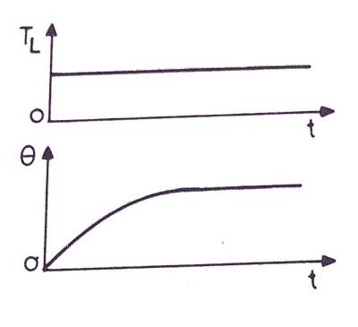
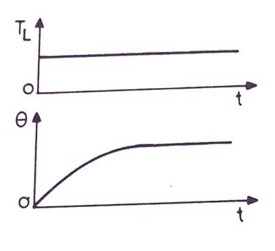

Now a days, in almost every applications, electric motors are used, and to control them electrical drives are employed. But the operating time for all motors are not the same. Some of the motors runs all the time, and some of the motor's run time is shorter than the rest period. Depending on this, concept of motor duty class is introduced and on the basis of this duty cycles of the motor can be divided in eight categories such as
i. Continuous duty
ii. Short time duty
iii. Intermittent periodic duty
iv. Intermittent periodic duty with starting
v. Intermittent periodic duty with starting and braking
vi. Continuous duty with intermittent periodic loading
vii. Continuous duty with starting and braking
viii. Continuous duty with periodic speed changes
i. Continuous duty
ii. Short time duty
iii. Intermittent periodic duty
iv. Intermittent periodic duty with starting
v. Intermittent periodic duty with starting and braking
vi. Continuous duty with intermittent periodic loading
vii. Continuous duty with starting and braking
viii. Continuous duty with periodic speed changes
Continuous duty: This duty denotes that, the motor is running long enough & the electric motor temperature reaches the steady state value. These motors are used in paper mill drives, compressors, conveyors etc.
 Continuous duty with intermittent periodic loading : In this type of motor duty, everything is same as the periodic duty but here a no load running period is occured instead of the rest period. Pressing, cutting are the examples of this system.

Short time duty: In these motors, the time of operation is very low and the heating time is much lower than the cooling time. So, the motor cooks off to ambient temperature before operating again. These motors are used in crane drives, drives for house hold appliances, valve drives etc.
Intermittent periodic duty: Here the motor operates for some time and then there is rest period. In both cases, the time is insufficient to raise the temperature to steady state value or cool it off to ambient temperature. This is seen at press and drilling machine drives.
Intermittent period duty with starting: In this type of duty, there is a period of starting, which cannot be ignored and there is a heat loss at that time. After that there is running period and rest period which are not adequate to attain the steady state temperatures. This motor duty class is widely used in metal cutting and drilling tool drives, mine hoist etc.
Intermittent periodic duty with starting and braking: In this type of drives, heat loss during starting and braking cannot be ignored. So, the corresponding periods are starting period, operating period, braking period and resting period, but all the periods are too short to attain the respective steady state temperatures, these techniques are used in billet mill drive, manipulator drive, mine hoist etc.
Continuous duty with starting and braking: f this system.
Continuous duty with periodic speed changes: In this type of motor duty, there are different running periods at different loads and speeds. But there is no rest period and all the periods are too short to attain the steady state temperatures.
 by
by {kind=link}
{kind=link}
{kind=link}
{kind=link}
{kind=link}